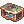

Weekly Quests
Weekly quests are exactly as they sound: a set of quests that can be completed once per player per week once you've a character that is level 175 and above.
To start on your weekly quests you must choose a single account to do all the quests on.
They will be able to be completed on any character within the chosen account, but cannot be transferred to another account once taken.
For more information on limitations, refer to the Rules page.
Once you have decided what account will be doing your quests, talk to Valerie O'Daley, located at the entrance of the Main Office.
Keep in mind that every player receives the exact same quests each week, so make sure to party up for those hard ones!
Completing Weekly Quests will reward the player with either  Blacksmith's Blessings or
Blacksmith's Blessings or  Endeavor Tokens.
All rewards are sent to the player via RODex.
Endeavor Tokens.
All rewards are sent to the player via RODex.
Weekly Quests reset on Tuesdays at 00:00 PST - Server Time (The Midnight between Monday and Tuesday).
Main Weekly Quests
Instance Completion
- Complete an Instance 3 times. A new random instance is chosen every week.
- Useful Info:
- Endless Tower & Endless Cellar come together and only need to be cleared once each of them.
- Werner's Laboratory:Central Room means doing the Story Mode (Spam that enter without mercy, do not pick the other option)
- Fall of Glast Heim means doing the Normal Mode
- Useful Info:
- Reward: 10 Endeavor Tokens
Instance Expedition
- Unlike Instance Completion, this quest requires you to talk to Nelloz. He can be found in Eden, next to Maggie Arth and Veteran Sean. You will have to complete a set instance, unique to you. This can be completed only once per day. Finishing the task 3 times in the week completes the weekly quest.
- You can reroll only 3 times during the week the instance you obtained.
- For the following instances, you can complete them by playing either "difficulty level":
- Fall of Glast Heim (Normal / Hard)
- Old Glast Heim (Normal / Hard)
- Water Garden (Normal / Hard)
- Hidden Flower Garden (First Security Area / Second Security Area)
- Faceworm's Nest (Classic / Hard)
- Horror Toy Factory (Classic / Nightmare Toy Factory)
- Reward: 2 Endeavor Tokens per day + 5 Endeavor Tokens at final turn-in (total 11)
Monster Subjugation
- Kill assorted monsters in high-end dungeons. A new set of two monsters, with varying kill counts, is chosen every week.
- Reward: 10 Endeavor Tokens
Monster Subjugation 2
- Much like Monster Subjugation, you'll be tasked with eliminating a certain quantity of two different mobs. This list does not overlap with the first quest.
- Reward: 10 Endeavor Tokens
Item Hunt
- Speak with Sean in Eden and help him to get some items.
- Reward: 2 Endeavor Tokens per delivery + 1 Blacksmith's Blessing at completion.
Combat Training
- Kill Tomb of the Fallen Monsters. A new set of two monsters, requiring 50-100 kills each, is chosen every week.
- Reward: 5 Endeavor Tokens
Weapon Refinement
- Refine 10 Weapon Level 4 up to +5 or higher (any refine above 5 also adds +1 to the total).
- Easiest/cheapest weapons to refine:
- Drop Level 4 Performer Weapons in Dreams and Shadows
- Drop/Buy Vicious Mind Weapons from Sky Fortress
- Get Royal Guardian Weapon from Glast Heim: Challenge Mode (Buy/Drop
 Temporal Fragment and exchange them for the weapons)
Temporal Fragment and exchange them for the weapons) - Buy/Complete Bioresearch Laboratory Combat Mode for Level 4 weapons (non-meta builds means cheaper weapon being sold)
- Easiest/cheapest weapons to refine:
- Reward: 5 Endeavor Tokens
Treasure Hunt
- Speak with Maggie Arth in Eden and help her locate some treasures.
- This is a daily quest that needs to be done 3 times.
- This means that a total of 9 treasures need to be found.
- Reward: 1 Endeavor Token per daily + 5 Endeavor Tokens at completion
Daily Reward
- Obtain Daily Rewards from Valerie in Main Office 4 times.
- Reward: 1 Blacksmith's Blessing
Clear all Weekly Quests
- Complete all Weekly Quests.
- Reward: 8 Blacksmith's Blessing
Alternative Weekly Quests
This set of Weekly Quests, provided by Sally O'Weekly located near the entrance of the Main Office, allows you to acquire Endeavor Tokens on alternate accounts, after completing the main Weekly Quests on your main account.
Keep in mind you're only able to take the set of Alternative Weekly Quests after acquiring the main set from Valerie O'Daley, and never on the same account. They also follow the same reset pattern as their regular counterparts.
The current set of Alternative Weekly Quests include Instance Completion, Instance Expedition, Monster Subjugation, Monster Subjugation 2 and Combat Training.
Instance Completion
- Complete an Instance 3 times. A new random instance is chosen every week.
- Reward: 10 Endeavor Tokens
Instance Expedition
- Unlike Instance Completion, you will have to complete a set instance, unique to you. This can be completed only once per day. Finishing the task 3 times in the week completes the weekly quest.
- You can reroll only 3 times during the week the instance you obtained.
- For the following instances, you can complete them by playing either "difficulty level":
- Fall of Glast Heim (Normal / Hard)
- Old Glast Heim (Normal / Hard)
- Water Garden (Normal / Hard)
- Hidden Flower Garden (First Security Area / Second Security Area)
- Faceworm's Nest (Classic / Hard)
- Horror Toy Factory (Classic / Nightmare Toy Factory)
- Reward: 2 Endeavor Tokens per day + 5 Endeavor Tokens at final turn-in (total 11)
Monster Subjugation
- Kill assorted monsters in high-end dungeons. A new set of two monsters, with varying kill counts, is chosen every week.
- Reward: 10 Endeavor Tokens
Monster Subjugation 2
- Much like Monster Subjugation, you'll be tasked with eliminating a certain quantity of two different mobs. This list does not overlap with the first quest.
- Reward: 10 Endeavor Tokens
Combat Training
- Kill Tomb of the Fallen Monsters. A new set of two monsters, requiring 50-100 kills each, is chosen every week.
- Reward: 10 Endeavor Tokens
Weekly Raffle
- Players will be automatically entered in the raffle when they complete the Complete ALL Weekly Quest
- Every Tuesday, 10 random names are drawn. Winners will obtain the following items (sent via RODex):
- 1st place: 10  Refinement Packs
- 2nd place: 7 Refinement Packs
- 3rd place: 5 Refinement Packs
- 4th~10th place: 2 Refinement Packs
- The winners can be known by talking to Tombola who is located in the center of Prontera